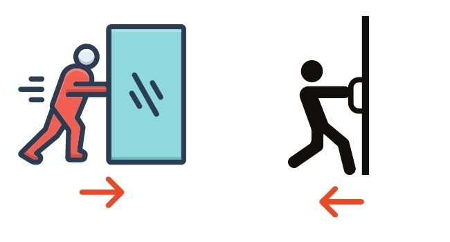
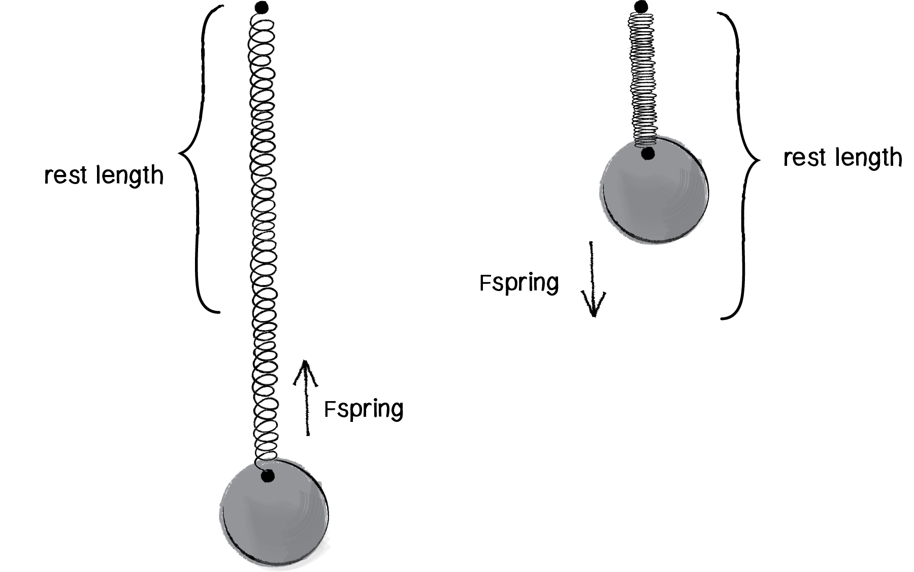
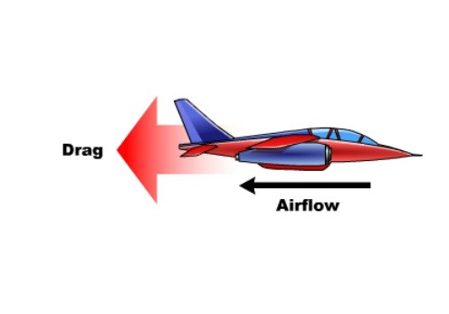
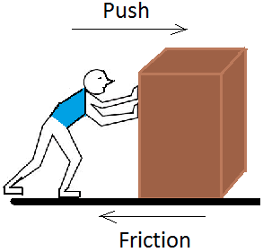
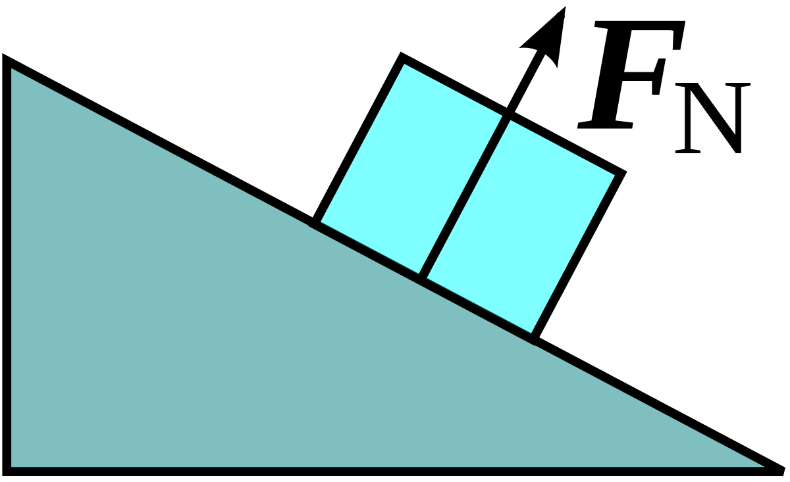
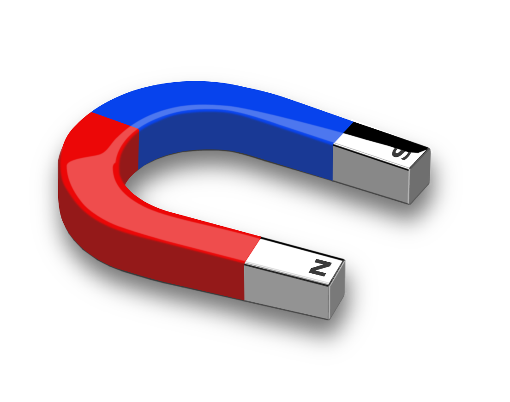
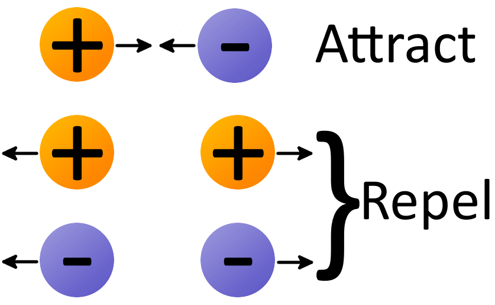
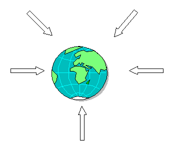

Many More Forces
Contact Forces
Contact forces are defined by forces that require some sort of physical interaction of contact to occur. Whenever you pick up your SciPad, or throw a ball, you are exerting a form of a contact force.
- Applied Force

Denoted by F app, applied force is a force that is applied by a person or an object. In some cases when you apply a force to a heavy object, you may not see the object move. This is because the object is too massive and you cannot apply a large enough force to change its position. Smaller objects like pens and pencils can be moved by us because we can apply a large enough force to move their mass. An experiment that you can conduct to test applied force is by getting different objects with different masses. Then push each one, try using the same amount of force each time. You can then summarise your results on what is the breaking point between the masses that you can push, and cannot push. Last step is to graph, and write a conclusion/discussion so you can practice the writing style of NCEA.
-
Spring Force 
One of these is that it tends to return to the same size after you either stretch or compress it. Another, perhaps less obvious property is that the more you stretch or compress it, the harder it is to stretch or compress it even more. Spring force is the force that is exerted by a compressed of stretched spring by any object that is on it. When you have a spring, the spring force is the force acting in the opposite direction of direction that it is being pulled. Elastic potential energy is built up, which is why when you let go of a spring, they fling! For most springs (specifically, for those that are said to obey "Hooke's Law"), the magnitude of the force is directly proportional to the amount of stretch or compression of the spring. So next time you play with a pen spring or a slinky, remember about the spring force.
-
Drag Force

Unlike simple friction, the drag force is proportional to some function of the velocity of the object in that fluid. This functionality is complicated and depends upon the shape of the object, its size, its velocity, and the fluid it is in. When an object falls from the sky, we know that it is falling downwards due to gravity. The force acting on the object is the weight force. This will be explained later, but it is the force caused by the effect of Earth's gravity on the object's mass. The other force opposing the weight force is called drag or air resistance. his is caused by the friction of the air acting against the object falling downwards. Air resistance is the result of collisions of the object's leading surface with air molecules. The more air molecules an object collides with, the slower it will travel due to the drag force opposing its motion. The amount of drag force acting on an object depends on how fast it is travelling.
-
Frictional Force

Friction is a force that occurs when an object tries to move against another object (solid) or liquid. Friction is the force that opposes motion. A byproduct of friction is heat, which is which is why you rub your hands together if they are cold. The effects of friction can be reduced if the surfaces of the two materials are lubricated. Friction can be increased by making a surfce rougher which is why you don't slip as easily on concrete compared to smooth tiles. Also by pressing the two objects against each other with more force. One of the most obvious effects of friction for students is that it can lead to the gradual wearing away of things; this can be seen in examples like the uneven soles of our shoes, balding bicycle tyres and the deliberate action of rubbing sandpaper on a surface. Experiences of trying to walk, roller skate or ski on slippery surfaces such as ice or snow promote an understanding that getting moving and/or changing direction are both difficult to do in environments where friction is reduced. Friction is frequently portrayed in the popular media as having a ‘bad’ effect and as something to be reduced or eliminated (for example by using friction reducing oils). But it also has a good effect. When you're driving in your car and you're approaching the signal lights, you want friction so that you don't crash into any cars, and you can stop safely before the lights.
-
Normal Force

Normal force is the perpendicular force that the surface exerts on an object. For example, if you put a book on a table, there is a gravitational force that is pulling it toward the ground. To counteract this force, the table exerts a force on the book, preventing it from falling. This counteracting force is called the normal force. As Khan Academy says, we can blame the normal force for the pain we feel when running into solid objects. The normal force is a force which surfaces exert to prevent solid objects from going through each other. We can take the example of your SciPad on a table. The SciPad is exerting weight force downwards, which is why it's not floating upwards. On the other side, the table is also exerting a force upwards onto your SciPad to keep it from falling down. It is called the 'normal' force becuase normal means perpendicular to a surface. Another name for it is the 'support' force as it supports objects from falling downwards.
Non-Contact Forces
Non-contact forces are forces that act on objects which aren't physically touching each other. An example of this is how we are all staying on the ground. We don't feel like an object is constantly pushing us downwards, that is because gravity is an example of a non-contact force.
-
Magnetic Force

Magnetic force is caused by the motion of charges. The magnetic force between two moving charges may be described as the effect exerted upon either charge by a magnetic field created by the other. If two objects contain a charge with the same direction of motion, they will attract towards each other. On the contrary, if the charge is moving in opposite directions, then the objects will repel each other. An example of this is using magnets. Every magnet has a north and a soul pole. If you put the south poles of two magnets close to each other, they will attract each other. Magnets can be affected by electricity, which makes them very useful in machines and computers. Magnets are used to make a tight seal on the doors to refrigerators and freezers. They power speakers in stereos, earphones, and televisions. Magnets are used to store data in computers, and are important in scanning machines called MRIs (magnetic resonance imagers), which doctors use to look inside people’s bodies.
-
Electric Force

How do we know there is such a thing as charge? The concept of charge arises from an observation of nature: We observe forces between objects. Electric charge is the property of objects that gives rise to this observed force. Examples where electric force occurs includes the charge in a bulb, electrical circuits, static electricity in objects, that shocking feeling after you touch a metal doorknob. The repulsion of attraction between charged objects is the result of the electric force. It is not based on the mass of the object, but depends on the quantity of electric charge an object contains. There is a law which you can research about called "Couloumb's Law' that expresses the amount of electric force between charges. Electronics is a great subject where you can learn and experience many different uses for electric force. To understand the nature of this force, you need to understand how atoms act around each other. This may require you to go back to your year 9 notes on atoms and their subatomic particles, also your year 10 notes on ions and electricity and magnetism.
-
Gravitational Force

Gravitational force surrounds everyone. It is the reason which makes us stay on the ground instead of float off into space. The gravitational force on Earth is equal to the force the Earth exerts on you. At rest, on or near the surface of the Earth, the gravitational force equals your weight. On a different planet like Mars or Mercury, acceleration of gravity is different than on Earth, this is because these astronomical bodies have different masses compared to earth. This is because the more mass something has, the more gravity it exerts on objects. This is the reason why you would weigh less on the Moon compared to Earth, because the Moon is less massive.